Press and creator kit
Mecca Gecko is a paint hide-and-seek party game for iPhone, iPad and Android, made by a one-person studio. Everything on this page may be used in coverage, videos, Shorts and thumbnails. No login, no permission needed. For codes, an interview or a dev Q&A, email support@valuxgames.com.
For creators
All footage is real gameplay recorded from the game itself (offline Bot Play rounds and our App Store preview reels, filmed with a scripted camera), with game sound only and nothing burned in, so you can add your own voice, captions and logo.
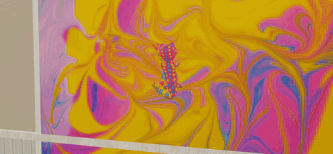
6-second gameplay GIF (3.1 MB). Download GIF · MP4 version.

- Thumbnail and art pack (ZIP, 18 MB): transparent hider and seeker cutouts rendered from the game's own 3D models, the transparent logo, key art made from a real frame, gameplay stills and the GIF. Download
- 16:9 gameplay b-roll (ZIP, 75 MB): 7 clips, 55 s, 1920 × 886 widescreen, game sound only: a gecko painting itself into the art, the hide scramble, a prop-hunt transformation, a seeker chase, the seeker's first-person view and a paint tag. Longer clips are on the way. Download
- 9:16 clip pack (ZIP, 196 MB): 10 vertical clips, 10–20 s each, 1080 × 1920, game sound only, no captions: prop-hunt disguises, spot-the-gecko push-ins, hider runs, seeker hunts with paint tags and a Palm Cove fly-over. Download
You may stream and monetize videos of Mecca Gecko. No permission or license needed.
Good to know before you record:
- About 1.7 GB on iOS, so start the download on Wi-Fi.
- BOT PLAY works offline. PLAY ONLINE connects friends with a party code or an invite link.
- When few people are online, the PLAY ONLINE game list is topped up with bot rooms so a round always starts. Those rooms are bots, not people, so please don't describe them as real players.
- If we gave you free in-game items, please say so in the video itself, for example "Valux Games gave me free in-game items".
Want codes for yourself and your viewers, or the developer in your stream chat? Email support@valuxgames.com.
Fact sheet
| Game | Mecca Gecko · "Paint. Hide. Get spotted." |
|---|---|
| Developer | Valux Games LLC, Raleigh, North Carolina, USA (one developer: Joey Sanchez) |
| Genre | Hide-and-seek party game: paint yourself to match the room, or turn into a prop |
| Platforms | iPhone and iPad (iOS 15+) · Android (Google Play) |
| Release | iOS: September 26, 2026 · Google Play: October 4, 2026 · Version 0.3.0 (October 2, 2026) added Arcade Atrium, Gecko Mart and Barn Bash |
| Price | Free. Optional characters, emotes and diamond packs. No subscriptions, no third-party ads |
| Age rating | App Store 9+ · Google Play: Everyone 10+ |
| Size | About 1.7 GB on iOS |
| Modes | Hiding styles: Hide and Paint, Prop Hunt · Game types: Classic, Red vs Blue, Infection |
| Maps | Seven: Gecko House, Palm Cove, Castle Keep, The Conservatory, Arcade Atrium, Gecko Mart, Barn Bash |
| Offline / online | Bot Play works offline. Online parties use a party code or invite link; rooms can be locked with a PIN or set to humans only. When few people are online, the game list is topped up with bot rooms |
| Engine | Godot 4 |
| Links | App Store · Google Play · meccagecko.com |
| Press contact | support@valuxgames.com (Joey Sanchez) |
About the game
Hiders get a head start to vanish: paint your character to match the wallpaper, the rug or the furniture and freeze in a pose, or copy a prop and hide among the real ones. Seekers then hunt the room with a toy paint blaster. There's no radar, so it comes down to sharp eyes. In Infection, every tagged hider joins the seekers; in Red vs Blue, two teams trade roles over a short series.
Play offline against bots, or host a party and share a code or an invite link with friends. The game is free; characters, emotes and diamond packs are optional purchases.
Key features
- Paint yourself into the scenery, or disguise yourself as a prop
- Seven maps, from a gecko's house and a palm island to a castle, a conservatory, an arcade, a supermarket and a barn
- 34 characters (22 hiders, 12 seekers) and 11 emotes
- Classic, Red vs Blue and Infection game types
- Offline Bot Play, plus online parties by code or invite link
- Rated 9+: no blood, the seekers' blasters shoot paint
Screenshots
Real 1920 × 886 frames from the game's App Store preview reels: the real game with a scripted camera (click for full size).

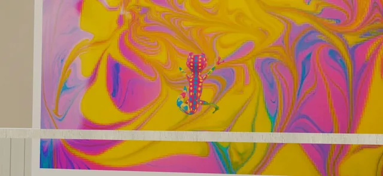

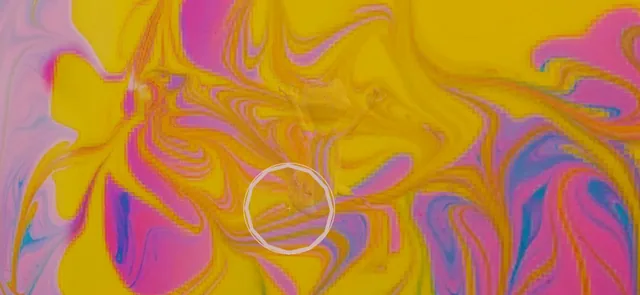

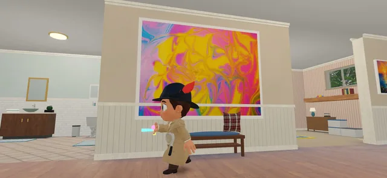

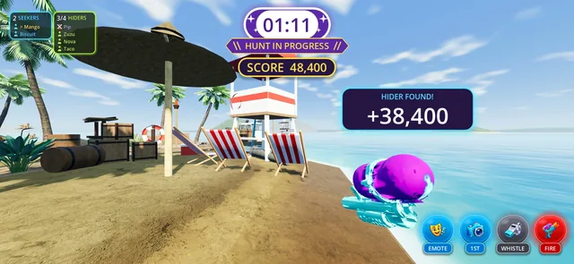

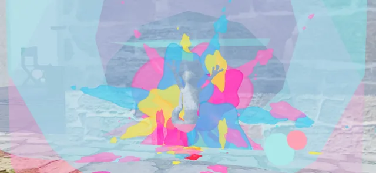

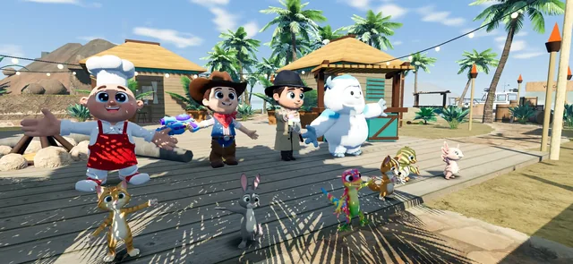
Cutouts, logo and key art
Transparent PNGs rendered from the game's own 3D models. All of it is in the art pack above.
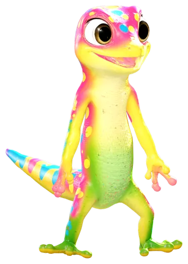
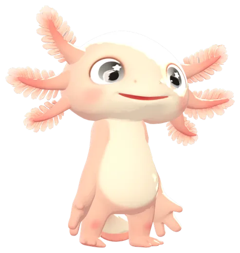

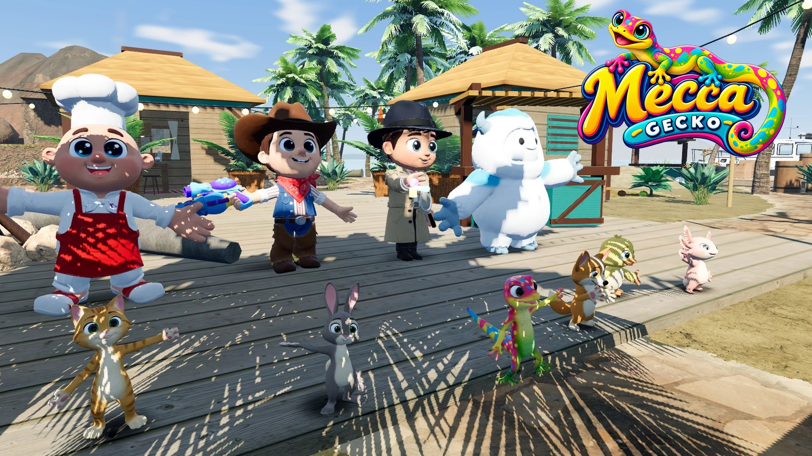

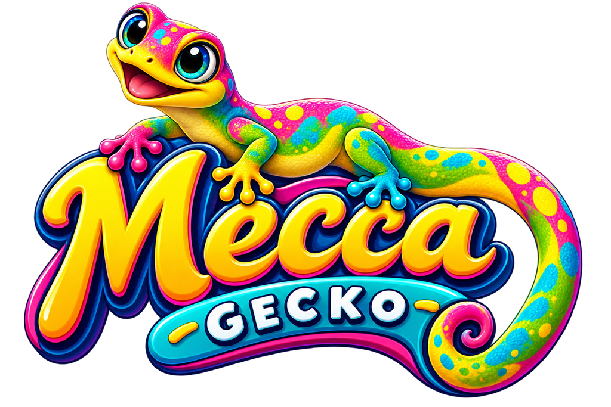
About the developer
Valux Games LLC is a one-person studio in Raleigh, North Carolina. It also makes Civic Watch, an offline comedy FPS for iPhone, iPad and Android.